当我们满怀着对城市生活的希望来到城市的时候，当我们为城市建设和经济发展贡献了我们青春的时候，我们却发现我们在城市的生存是如此地艰辛，血和汗的交织是我们在城市的真实写照。
人力三轮车
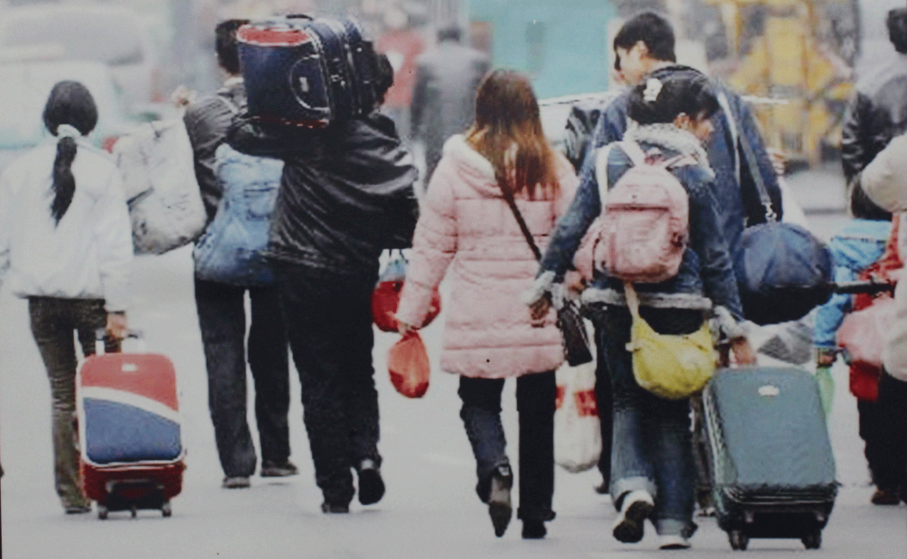
进城打工
调查结果表明，打工者在务工经商期间生病时，有37.79%的打工者会自己根据病情到药店买点药吃，2.01%的打工者去正规医院看病，20.45%的打工者去个体诊所看病。
——国家统计局《城市农民工生活质量状况调查报告》2006年
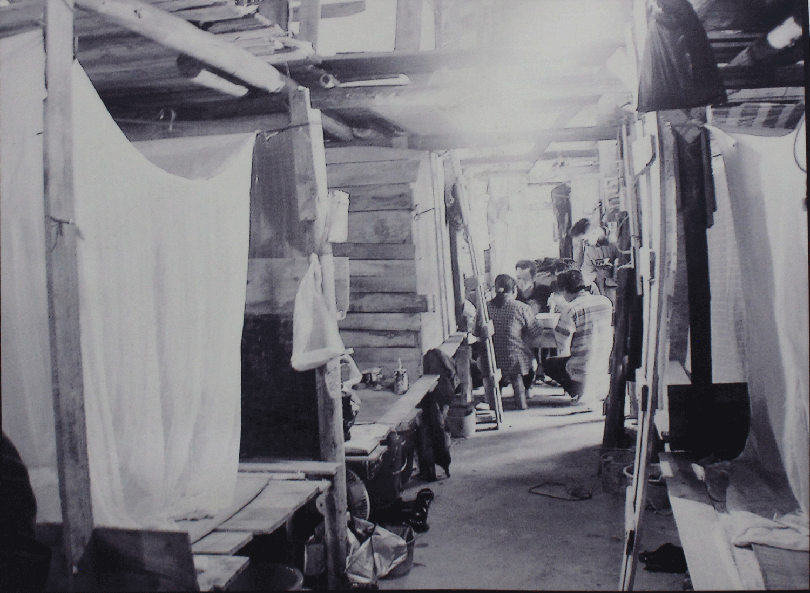
工人宿舍
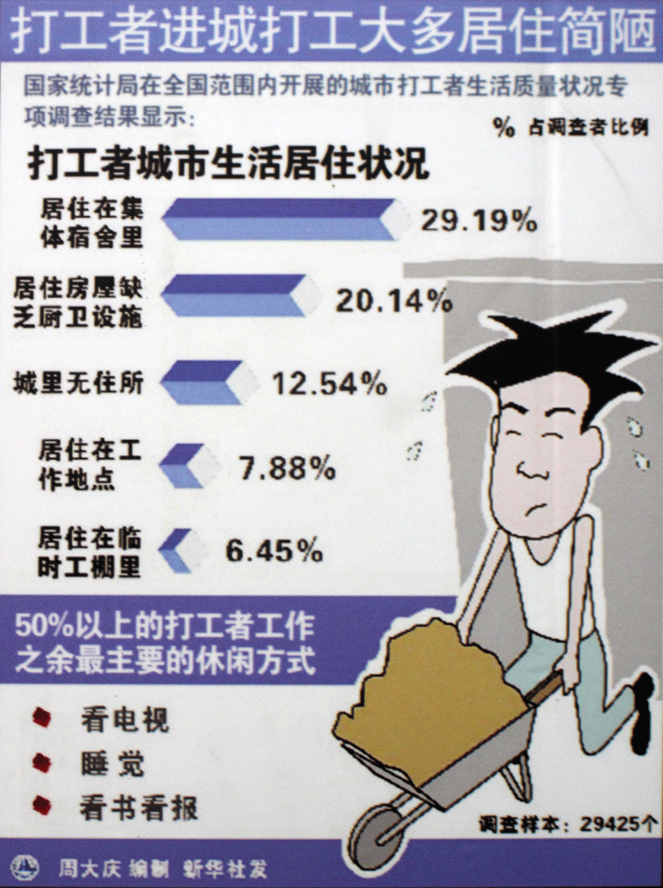
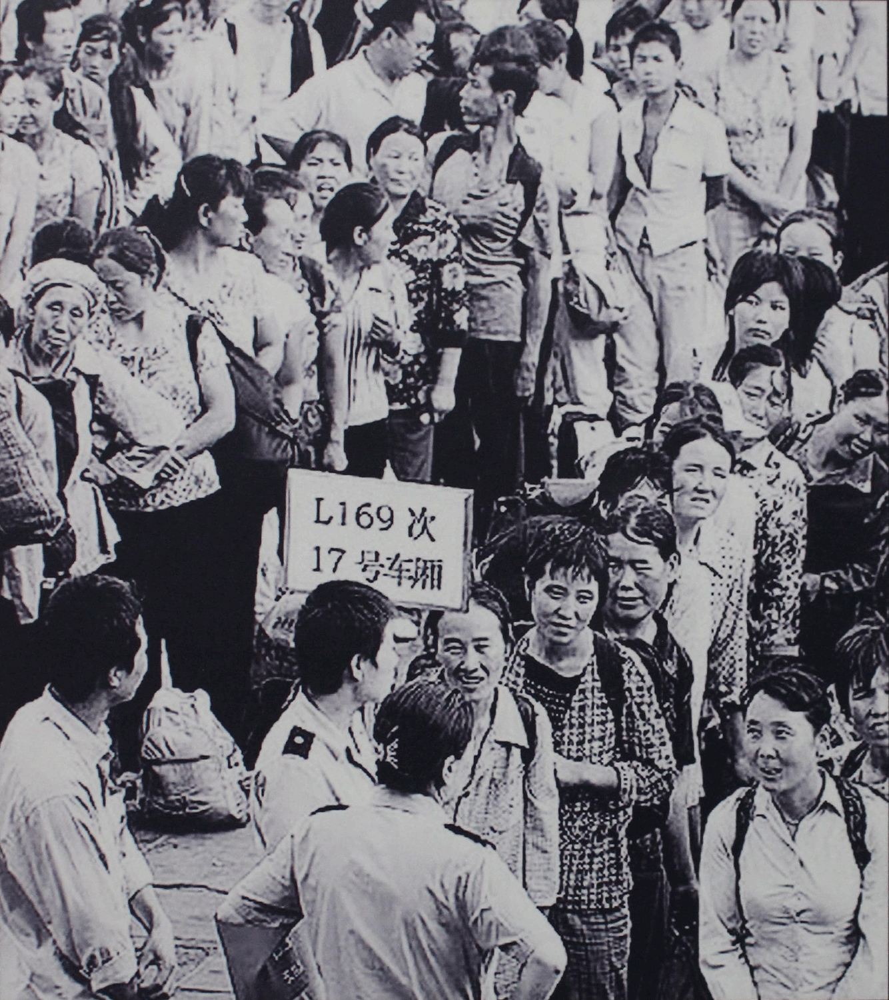
每次回家总是那么拥挤
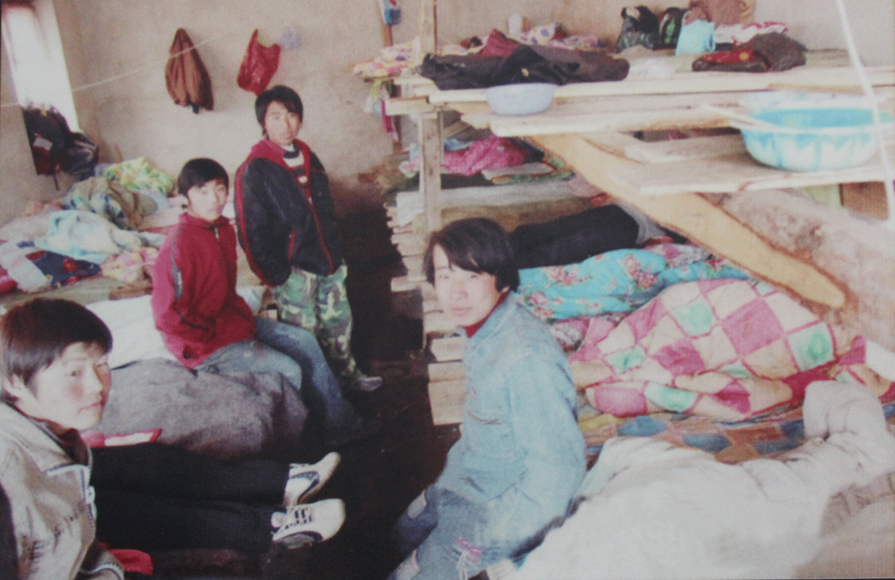
工人宿舍
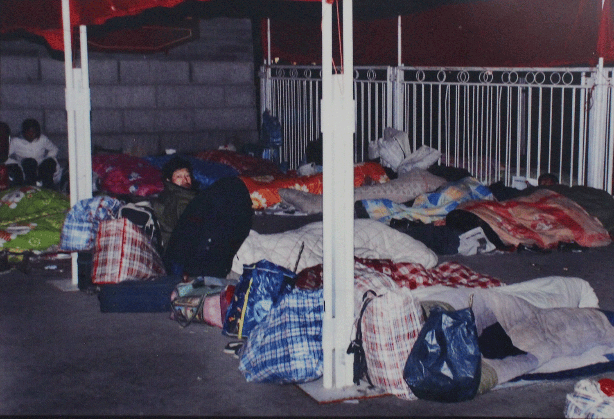
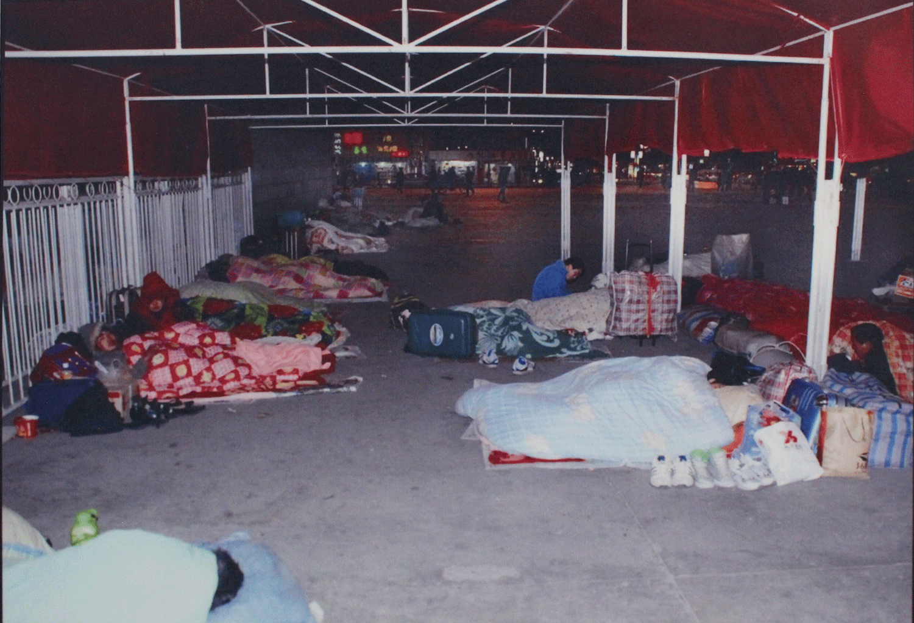
露宿街头
调查表明，打工者业余时间的休闲方式主要是看电视、睡觉、看书、看报、聊天或闲逛、棋牌及体育活动、听广播、上网、看录像、看电影、打电话、自学、参加培训以及其他活动等。50%以上的打工者只有前三项是最主要的休闲方式。
——国家统计局《城市农民工生活质量状况调查报告》2006年
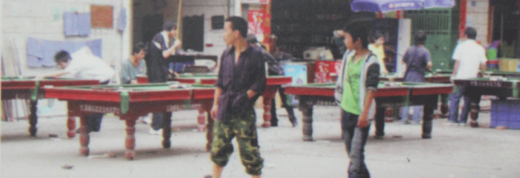
工友们为数不多的业余时间常常放在能放松心情的桌球上
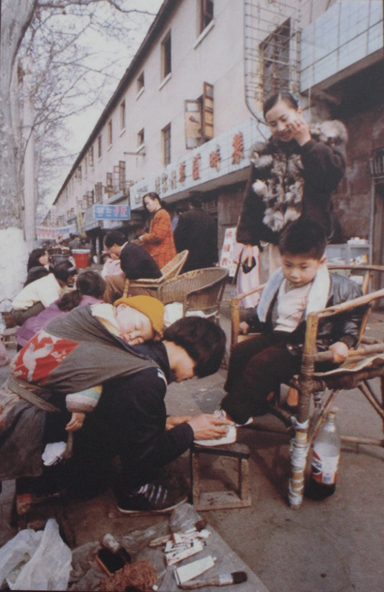
两代人对比
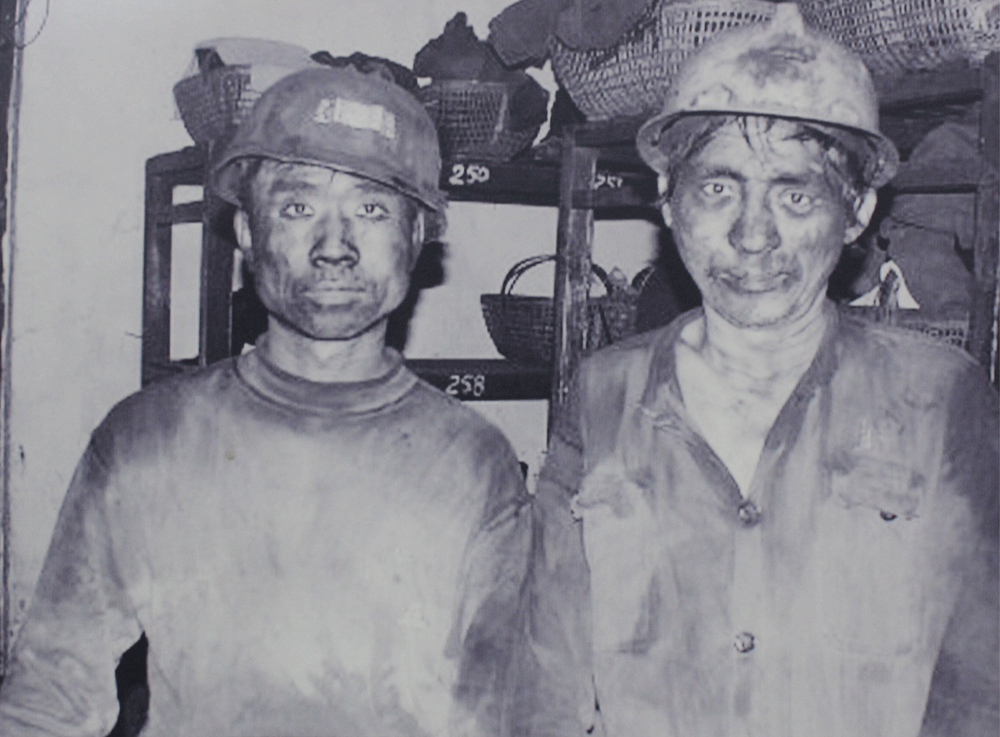
矿工
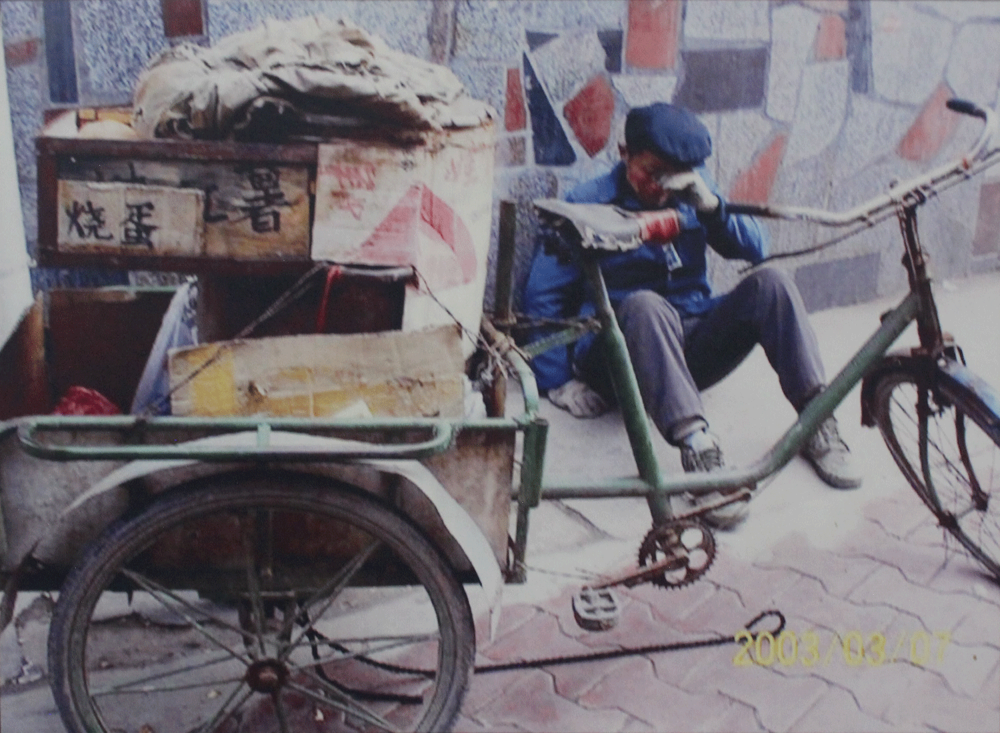
车链被城管剪短了